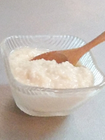
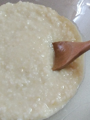
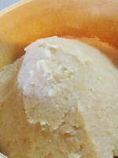

塩麹
米麹と塩と水を混ぜるだけの万能調味料。塩の代わりに使うだけで、味に深みが出て料理が美味しくなります。野菜を漬けると、簡単に浅漬けもできます。
一晩漬けるだけで、お肉やお魚がとっても柔らかくなります！30℃を超えると麹のタンパク質分解酵素が死活するという説もあり、15℃以下では働かないので、お肉やお魚を柔らかくしたい場合は常温で発酵させるのがお勧めです。1～2週間で発酵したら、保存は冷蔵庫で！
自家製の発酵がいろいろと心配という方は、市販の塩麹で加熱処理しているものを使ってみてください。私の経験では、加熱処理したものでも多少はお肉やお魚が柔らかくなっているように感じます。
塩麹（しおこうじ）
《材料》
・米麹100g
・水100～110g
・食塩35g
《作り方》
1.米麹と食塩をボールや袋に入れて、手でまんべんなく混ぜる
2.容器に入れて米麹がひたひたに漬かるくらいまで水を入れる
（ガラス推奨・プラ容器も可）
3.1日1回、底からよくかき混ぜる
（水分が減っていたらひたひたまで水を足す）
4.夏場は1週間～冬場は2週間で完成！
※出来上がったら冷蔵庫で保管してください♪
◆粒々が気になる方は、ブレンダーやミキサーで滑らかにすると使いやすいです
《注意》
・腐敗の原因になるので、塩分は35％以上で！
・減塩は出来上がった塩麹を使用する量で調節してください♪
醤油麹（しょうゆ麹）
一番簡単！ただ米麹と醤油と混ぜるだけ。たったそれだけで、とっても美味しい調味料ができます！めんどくさがりの私にぴったり。一番のオススメ調味料です。
美味しい醤油がさらに美味しくなって、うまみ成分増量。冷ややっこに乗せる、納豆に混ぜる、それだけでいつも以上の美味しさ。サラダのドレッシングにすると野菜が進む！お酢と醤油麹とオイルを各々同量混ぜるだけで美味しいドレッシングができます♪
醤油麹に漬けてもお肉やお魚が柔らかくなります。焦げやすいので、蒸し焼きがお勧めです。
私は濃口醤油には発芽玄米麹、薄口醬油には白米麹を使うのが好きです。食材にかけたり和えたりは濃口の玄米醤油麹、料理の味付けに使う際は薄口の白米醤油麹が合います。
醤油麹（しょうゆ麹）

《材料》
米麹100g
醤油100～110g
《作り方》
1.米麹を容器に入れて、ひたひたに漬かるくらいまで醤油を入れる
（ガラス推奨・プラ容器も可）
2.スプーンでまんべんなくかき混ぜる（乾燥麹の場合は麹が醤油を吸うので、ひたひたより少ない場合は醤油を足す）
3.1日1回、底からよくかき混ぜる（醤油が減っていたらひたひたまで足す）
4.夏場は1週間～冬場は2週間で完成！
※完成後は冷蔵庫で保管してください♪
◆粒々が気になる方は、ブレンダーやミキサーで滑らかにすると使いやすいです
甘麹（甘酒）
甘酒として飲むだけでなく、お砂糖代わりに料理に使っても美味しい甘麹。私はペースト状のものを甘麹、水分が多くて飲めるものを甘酒と呼んでいます。米麹とお湯だけで作ることもできるのですが、炊きたてのご飯を混ぜて作る味が好きです。
甘麹（甘酒）は、麹のでんぷん質分解酵素でお米のでんぷん質をブドウ糖へと糖化することで甘くなります。60℃で8時間保つと甘くなると言われていますが、私は5時間程でも十分甘いと感じています。70℃を超えるとデンプン質分解酵素が死活するといわれているので温度管理が大変そうに感じますが、ヨーグルトメーカーなどがあれば簡単にできます。炊飯器や魔法瓶を使う方法もあります。
60℃を超えると酵素が死活するという説もあるのですが、私は圧力鍋で65℃まで上げて作っても甘くなるので、70℃を越えなければそんなに神経質にならなくても良いと思っています。
甘麹（麹甘酒）
《材料》
米麹100g
炊き立てのご飯100g
《作り方》
1.炊き立てのご飯をほぐして少し冷ました後、米麹を入れてムラなく混ぜる
（ご飯を炊いたお鍋や炊飯器でOK）
2.蓋をして、55℃～65℃で保温する
（炊飯器は保温モード、鍋の場合は毛布などに鍋ごと包むとよい）
3.1時間～2時間に1回、よくかき混ぜる
（鍋の場合は70℃を超えないように気を付けながら温める）
4.5～10時間で、自分好みの甘さになったら完成！
※完成後は冷蔵庫で保管してください♪
◆粒々が気になる方は、ブレンダーやミキサーで滑らかにすると使いやすいです
おから味噌
自家製のお味噌って大変そう…って思っていました。でも、おから味噌はとっても簡単！仕込んだら3～4ヵ月ほったらかしです。失敗することもなく、毎回美味しくできます♪
材料はおからと豆乳に、米麹と塩のみ。これを混ぜてジップロックに詰めて放置。ひたすら放置するだけで白みそに似た美味しい味噌ができます！
初めて作った際、4か月経っても色が白っぽいので、まだできてないんじゃ？と思っていたのですが、半信半疑でお味噌汁にしたところ、とっても美味しくてビックリしました。簡単なので、興味のある方は是非作っていただきたいです！一度封を開けたら、冷蔵庫で保存してください♪
おから味噌
《材料》
米麹200g
生おから100g
豆乳50cc
食塩40g
《作り方》
1.米麹と食塩をボールや袋に入れて、手でまんべんなく混ぜる
2.生おからを加えて握りつぶすようにしながら混ぜる
3.豆乳を加えてよく捏ね、ひとかたまりにする
（ひとかたまりにならなければ少し豆乳を足して捏ねる）
4.ジップロックに敷き詰め、中の空気を抜き密閉する
（袋の端までしっかり詰めて空気を入れないように！）
5.同じ重さ程度の重しをのせて常温でねかし、夏場は2か月～冬場は4か月で完成！
※完成後は冷蔵庫で保管してください♪
◆熟成してきて柔らかくなったら液体が上がってくるので、重しを外して立てて保管してください！